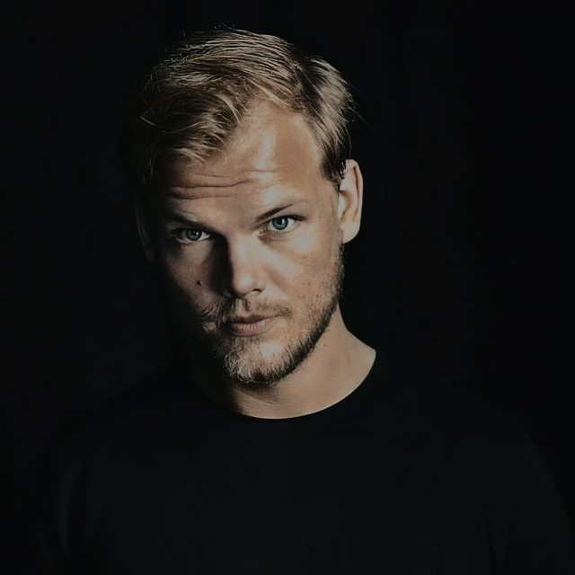
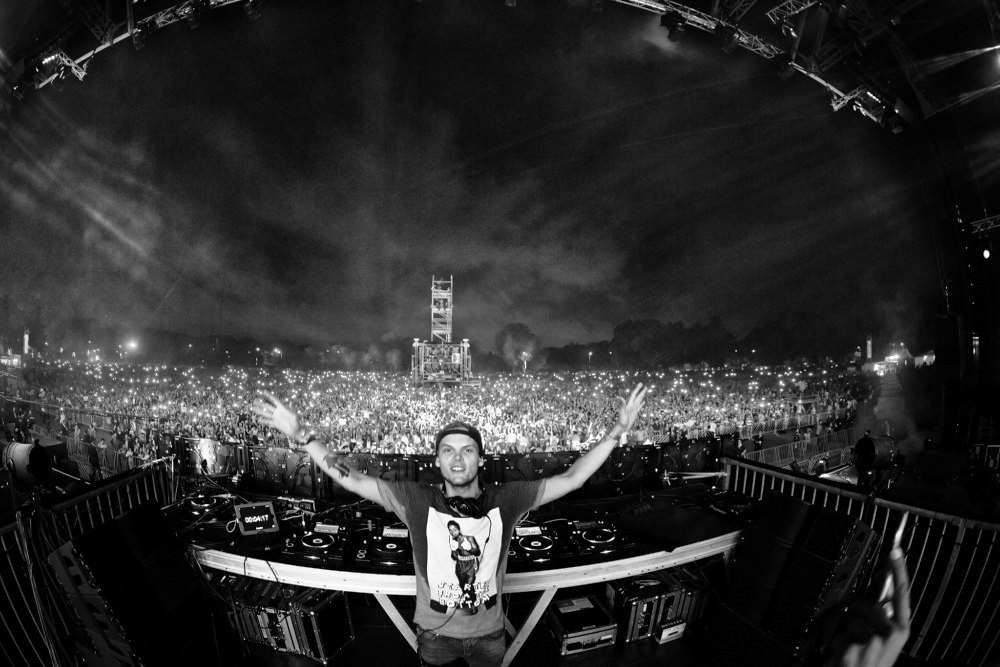

Tim Bergling, better known as Avicii, wasn’t just a producer, he was the heartbeat of a generation. Through his music, he gave a voice to emotions we couldn’t describe, blending electronic rhythm with human warmth. His songs like Wake Me Up, The Nights, and Waiting for Love became anthems of hope, reminding us to live fully, dream boldly, and never stop moving forward.
Behind the name Avicii stood a humble artist, a dreamer, and a visionary who changed the landscape of electronic music forever. His sound crossed borders, his melodies united strangers, and his light continues to shine through the beats that still echo on every dance floor.
Even though he’s gone, the world still dances to his music, because some lights never fade.
AVICII FOREVER: THE TRIBUTE was born from the desire to keep his spirit alive, not only through music, but through shared emotion. This is more than a festival; it’s a space for connection, memory, and light.
Every stage, every visual, every sound is designed to honor his story, to bring fans from all around the world together in the same heartbeat that once defined an era. Here, the past and present merge in a celebration of everything Avicii created: unity, joy, and love through sound.
We gather not just to listen, but to feel again. To remember the nights that changed us, and to dance once more, for him, and for the music that will live forever.
AVICII FOREVER: THE TRIBUTE was born from the desire to keep his spirit alive, not only through music, but through shared emotion. This is more than a festival; it’s a space for connection, memory, and light.
Every stage, every visual, every sound is designed to honor his story, to bring fans from all around the world together in the same heartbeat that once defined an era. Here, the past and present merge in a celebration of everything Avicii created: unity, joy, and love through sound.
We gather not just to listen, but to feel again. To remember the nights that changed us, and to dance once more, for him, and for the music that will live forever.